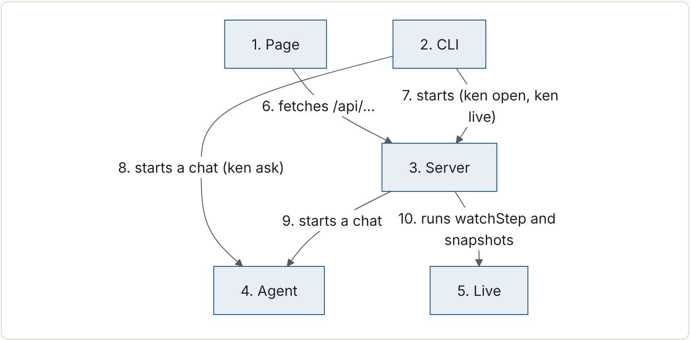

ken
Ask ken what changed in your software project, why, or how a part works now. Each decision, risk and statement in its answer quotes the lines it rests on, in code, a commit message or a saved session of your coding agent.
ken runs on your machine, in a page it opens in your browser, and a model you choose writes the answer. ken looks up every quote. If one is not where it says it is, ken throws the answer out. It checks where each quote is, not whether the sentence is true.
Why not ask your coding agent? In ken's own test, a plain chat with a coding agent found as many risks as ken, and often more, and ken was slower, at about half a million input tokens per answer on Claude Opus. What ken adds is quotes you can look up, and answers you can find again the next day.
Early work, not released. Nothing to install, no license, private repository.
![The question What did the last commit do, and why? Name the decisions it made and any risk I should know about. Under it, the summary from ken's model, one decision labelled Recorded, and the heading 3 risks to watch. Risk 1 is marked Quotes code outside the change: every fetchUser call where all 3 tries fail now waits about 1.4 s before it throws, up from 0.6 s, because retry still sleeps 800 ms after the last try. Its first quote is open and shows line 8 of src/user.ts at a32ffb8, where fetchUser calls retry. Two more quotes of src/retry.ts are folded.](images/ken-risk-with-quotes-wide.png)
What is in an answer, and what ken checks
An answer has a short summary, then the decisions with their reasons, the risks, and plain statements. Ask how the parts fit together, or about a change that touches two or more parts, and it opens with a basic diagram, where each box and arrow quotes its lines too.

When you ask about a change, ken also gives the model the places in the code that use a name the change touched. Once an answer passes, ken asks the model for a second look at its risks.
The check covers only the quotes. It does not check that a sentence, a risk or an arrow is true, and it does not check the summary. If the check rejects an answer, the agent tries again, up to three times. Commits, authors, dates, and any changed lines the answer did not quote come from git, not from the model.
A label says how the agent knows each claim:
-
Recorded
Written down at the time, in a commit or with
ken decide. - From the session Quoted from a saved session, with anything that looks like a secret key removed.
- Inferred Worked out from the code or the diff.
- Found by search A link between two pieces of code that rests on a text search, not on code the model read. Nobody proved it.
In an answer about a change, ken, not the model, marks each risk "Quotes code outside the change" or "Quotes only the changed lines".
How ken works
The agent sends the model provider the code and session text the model reads. ken hides what looks like a secret key in session text as it reads a session, before that text reaches the model, the page, your history or the record. It hides nothing in your code or git history.
Outside .ken/ in the project and ~/.ken/ on your machine, ken writes nothing. It
never edits your code, commits or pushes. The project record holds what passed the check: decisions, topics,
and which commits belong together as one task, with a short summary. You commit it for collaborators and
their agents.
What ken works with today: git repositories, Claude Code sessions only, and one developer. ken finds code by
text search only. It uses an OpenAI-compatible endpoint, or the claude command through a small
local endpoint that ken includes, and has been tried on glm-5.3, kimi-k3.1-pro and Claude Opus.
What ken keeps for you
Press "I know this" under an answer to mark its topics as known. A later answer shortens a topic you know to one line, or starts with what changed if the code it quotes has changed.
"Waiting on you" lists the decisions an agent left open for you, and topics you marked as known whose code has changed since. Answer a decision with "Keep what was chosen" or "I want it changed". ken saves your answer and note, and changes no code.
"Decisions" lists every decision saved for the project, with its label and where its reason comes from. A later decision on the same question replaces the older one.
![Two decisions in the Decisions view. The first is labelled Recorded: should the wait between tries be fixed or grow with each try? Chosen: the wait doubles after each failed try. Why: a fixed wait kept hitting the API while it was down, quoted from the commit message of a32ffb8. The second is labelled From the session: how are failed attempts made visible? Chosen: each failed attempt writes one console.warn line. Why: the owner wants the logs to show how often the network fails, quoted from the coding agent's saved session of 06:44.](images/ken-decisions-wide.png)
Live mode
Live mode runs beside your coding agent. When a commit lands, or your uncommitted changes stop changing for
a while, ken's model writes a short note. ken checks its quotes, not its words. A note on uncommitted work
is a draft kept in ~/.ken/. Each note is a model call, so live mode is off until you turn it
on, and ken's local page shows what it spends.

In its test, ken found no more than a plain chat
Each round put the same question about real merged pull requests of another project by the same owner to ken and to a plain chat with a coding agent on Claude Opus: what did it do, why that way, and what decisions and risks are in it. ken ran on glm-5.3 or on Claude Opus. Rounds 1 and 2 used three pull requests, and ken was tuned on these three. Round 3 added two more. Rounds 4, 5 and 6 each added three new ones that ken had never seen. One AI judge, a fresh one each time, scored each round against the code. ken's author has not scored them.
ken's own plan says ken must win at least one of three counts and lose none:
- Finding more. The answer names a decision or a risk the other answer missed.
- Checking without the diff. Each claim points at lines you can look up. The plan calls this trusting the answer without opening the diff.
- Finding it again. You can find the answer again the next day.
ken scored on two counts a plain chat cannot score on at all, in every round and on both models: checking without the diff, because the plain chat quotes nothing ken can look up, and finding it again, because the plain chat keeps nothing. So each pass of the rule rests on those two counts, and whether ken passes turns on finding more alone.
| Round | ken's model | Pull requests | Finding more | Passes |
|---|---|---|---|---|
| 1 | glm-5.3 | 3 tuned | lost | no |
| 2 | glm-5.3 | 3 tuned | narrow loss | no |
| 3 | glm-5.3 | 3 tuned | lost | no |
| 3 | glm-5.3 | 2 more | lost | no |
| 3 | Claude Opus | 3 tuned | lost | no |
| 3 | Claude Opus | 2 more | tie | yes |
| 4 | Claude Opus | 3 tuned | tie | yes |
| 4 | Claude Opus | 2 more | lost | no |
| 4 | Claude Opus | 3 new | tie | yes |
| 4 | glm-5.3 | same 3 | lost | no |
| 5 | Claude Opus | 3 tuned | tie | yes |
| 5 | Claude Opus | 2 more | narrow loss | no |
| 5 | Claude Opus | round 4's 3 | lost | no |
| 5 | Claude Opus | 3 new | narrow win | yes |
| 5 | glm-5.3 | same 3 | tie | yes |
| 6 | Claude Opus | 3 new | tie | yes, only just |
The same three pull requests passed in round 4 and failed in round 5, so one answer per pull request is a noisy measure, and a pass is not proof. ken's answers are longer and slower, at two to four minutes on Claude Opus and four to eight on glm-5.3 against one to three, and in round 6 about half a million input tokens each, half of them for the second look at risks. In round 5 one of ken's risks was false, and still carried the mark "Quotes code outside the change".
Rounds 1 to 5, one by one
- Rounds 1 to 3. ken ran on glm-5.3, then on Claude Opus. Rounds 1 and 2 used three pull requests, and ken was tuned on these three. Round 3 added two more. ken lost finding more in every round, taken over all its pull requests together. The first verdict opens with "No. ken does not meet its plan's rule."
- Round 4 added two things: the list of places that use the names a change touches, and the second look at risks. With Claude Opus on both sides, ken passed on the three tuned pull requests for the first time, with finding more a tie. It failed on the two others, losing finding more clearly on one and narrowly on the other. On three new pull requests it had never seen, it passed narrowly, with a tie. With ken on glm-5.3, those three failed.
- Round 5 made the second look read the code each risk points at, and ask what happens when two decisions touch the same thing. It also put the risks in order and added ken's two marks on risks. With Claude Opus on both sides, three more pull requests ken had never seen passed. Finding more was a tie on two and a narrow win for ken on one, and the judge said a count of finds gives a tie, or ken by one. The three tuned ones passed. The two others failed narrowly on finding more, and so did the three that had passed narrowly in round 4. With ken on glm-5.3, the three newest passed, with a tie.
Every pull request came from one repository. The verdicts are in the repository, which is private today,
under docs/checkpoint/.